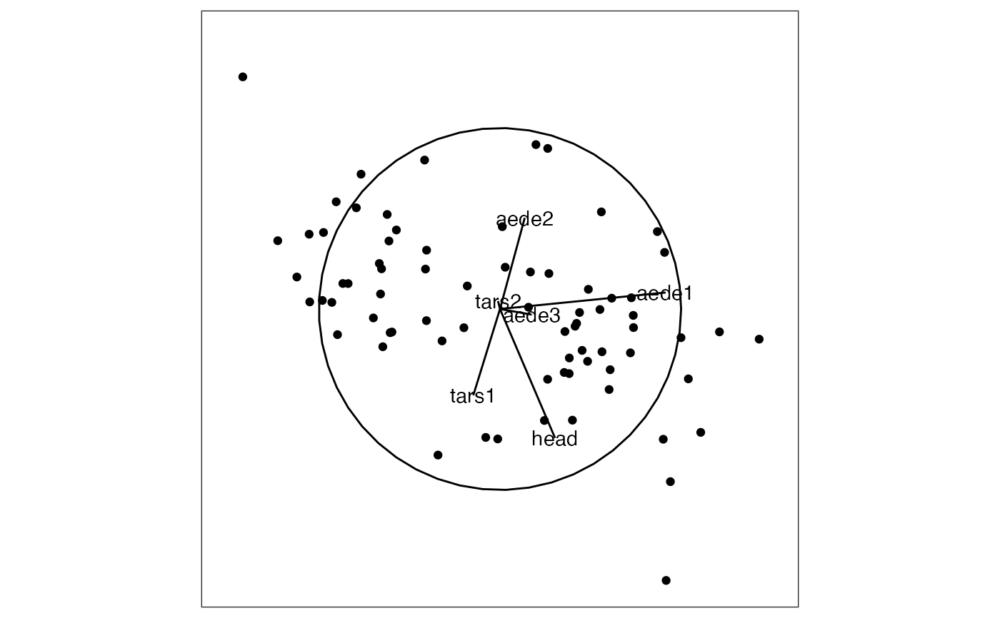

This function takes a projection matrix as produced by save_history(), and draws it on the projected data like a biplot. This will product the data objects needed in order for the user to plot with base or ggplot2. Note that for now this only works for 2D projections.
Usage
render_proj(
data,
prj,
axis_labels = NULL,
obs_labels = NULL,
limits = 1,
position = "center"
)Arguments
- data
matrix, or data frame containing numeric columns, should be standardised to have mean 0, sd 1
- prj
projection matrix
- axis_labels
of the axes to be displayed
- obs_labels
labels of the observations to be available for interactive mouseover
- limits
value setting the lower and upper limits of projected data, default 1
- position
position of the axes: center (default), bottomleft or off
Examples
data(flea)
flea_std <- apply(flea[,1:6], 2, function(x) (x-mean(x))/sd(x))
prj <- basis_random(ncol(flea[,1:6]), 2)
p <- render_proj(flea_std, prj)
if (require("ggplot2")) {
ggplot() +
geom_path(data=p$circle, aes(x=c1, y=c2)) +
geom_segment(data=p$axes, aes(x=x1, y=y1, xend=x2, yend=y2)) +
geom_text(data=p$axes, aes(x=x2, y=y2, label=rownames(p$axes))) +
geom_point(data=p$data_prj, aes(x=P1, y=P2)) +
xlim(-1,1) + ylim(-1, 1) +
theme_bw() +
theme(aspect.ratio=1,
axis.text=element_blank(),
axis.title=element_blank(),
axis.ticks=element_blank(),
panel.grid=element_blank())
}
